A visual essay and guide
What remains
Bitcoin’s unspent outputs, block by block
Every output Bitcoin has created and not yet spent, laid out as a landscape. Left to right is when it was made, from the first block to the newest; front to back is how much it holds, from one satoshi to thousands of bitcoin. Height and colour show how much remains in each place. Your browser replays the real chain to draw it.

I. Field
Seen from beyond its newest block, the landscape runs back seventeen years to the horizon. The near edge glows where the chain is still being written. Everything behind it is what remains: outputs that were created at some block and have not been spent since.

Read the data
A cell covers 64 blocks of creation time and one of 2,072 amount rows. Height and colour show weighted density: an output of up to 5 BTC counts one; a larger output counts its amount divided by 5 BTC, so large holdings stay visible among the small. Height follows a logarithm of that value.
II. Strata
From above the newest blocks, the field becomes a chart. Creation time runs left to right, amount runs from a single satoshi at the near side to 10,000 BTC and more at the far side. Round amounts draw bright lines across the years, because so many outputs are made for exactly 1 BTC, 0.1 BTC or 0.01 BTC.
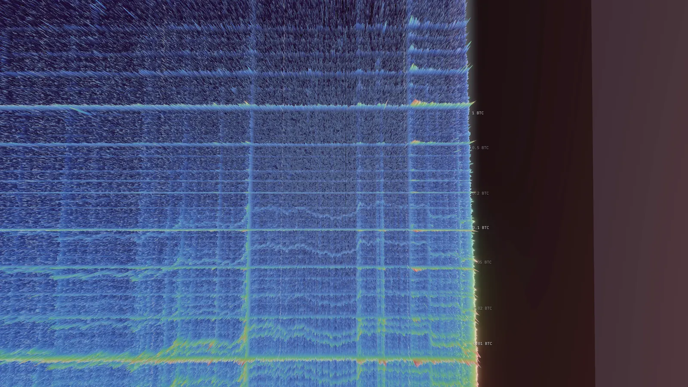

III. A cell
Come close and the field breaks into columns. Each column is a cell: 64 blocks and one narrow band of amounts. This one holds 214 outputs of about 1 BTC each, all created in the eleven hours before this moment. Each division is one output. Its neighbours, just above and just below 1 BTC, hold 17 and 35.
Read the data
Cell 15150:803 covers blocks 969,600 to 969,663 and amounts from 0.99676749 to 1.00868904 BTC. At block 969,652 it holds 214 outputs, 214.0569 BTC. Height is a logarithm of weighted density, so ten times as many outputs do not stand ten times as tall; the divisions always show the exact count.
IV. Time
Now the camera holds still and the chain moves: 1,200 real blocks, about eight days, replayed at 60 blocks a second. New columns rise on the empty ground beyond the edge; older outputs flash as they are spent. The column we read grows to 232 outputs while its last blocks are written, up to block 969,663, then only loses them, down to 94. Spending does not destroy bitcoin: a spent output leaves the unspent set and its value moves into new outputs at the edge.
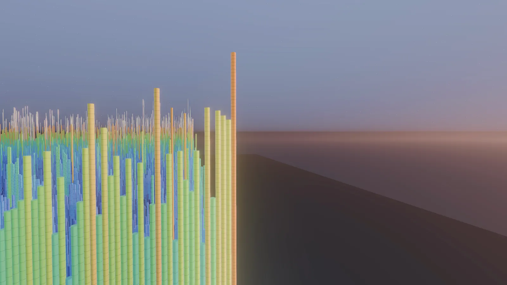
Read the data
Flashes mark spends, brighter for more bitcoin moved; spends of coins created within the last four weeks are dimmed, because young coins move constantly.
V. Readings
The same place and the same block, read two ways. Height shows the number of outputs in both. First, colour shows that number too, and the crowded rows of small amounts burn brightest. Then colour shows the bitcoin they hold: the crowded rows go dark and the rows of large amounts light up, beyond the 5 BTC label at the newest edge.


Outputs above 5 BTC are 0.157% of all unspent outputs and hold 83.7% of the value.
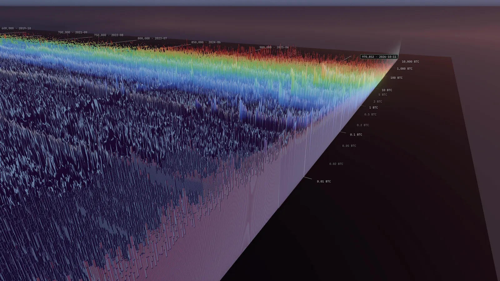
VI. Return
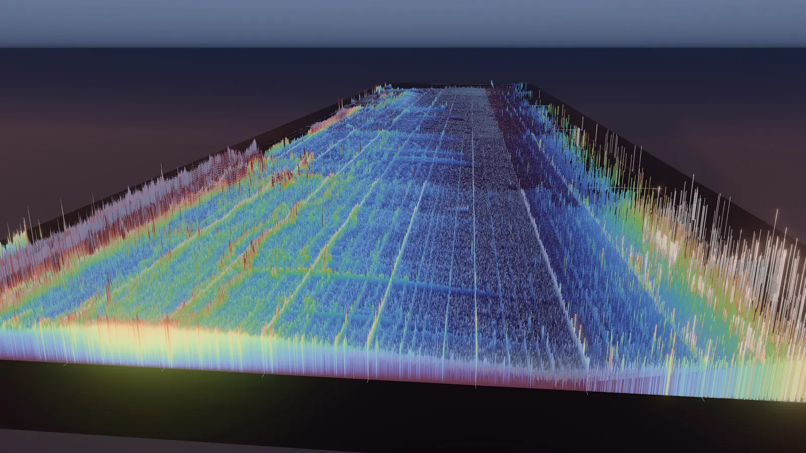
Back at the opening view, 1,200 blocks later. From here the landscape looks unchanged, yet its edge has moved on and the column we read has lost more than half of its outputs. You can read it yourself now.
Every view on this page opens in the app at its exact block and camera.
Practical
The guide
Getting around
The app opens in map mode. Drag to pan, and the point you grabbed stays under the cursor. Right-drag or Shift-drag orbits around the point under the cursor, the wheel or a trackpad pinch zooms toward it, and a double-click flies there. P opens Places, which jumps to the eras or flies to the amount bands, from the 50 BTC coinbase row to 1 to 100 sat.
F, or the Fly button, switches to flight mode: the mouse looks around, WASD flies, E and Q go up and down, Shift is 4x faster and the wheel sets the speed. Esc returns to map mode.

Map mode
- Drag
- Pan; the grabbed point stays under the cursor
- Right-drag Shift
- Orbit around the point under the cursor
- Wheel Trackpad pinch
- Zoom toward the cursor
- Double-click
- Fly to that point
- Point
- The card under the block shows the amount range, blocks and unspent outputs under the cursor
- Click I
- Inspect the cell under the cursor
- ← ↑ → ↓
- Pan (Shift for 4×)
- Q E
- Rotate around the screen centre
- PgUp PgDn
- Tilt
Fly
- F Fly button
- Enter or leave flight mode
- Mouse
- Look (drag when pointer lock is unavailable)
- W A S D
- Fly; Shift for 4×
- E Q
- Up and down
- Wheel
- Flight speed
- I
- Inspect the cell at the crosshair
- Esc
- Back to map mode
Panels
- G
- Graphics settings
- P
- Places
- H ?
- Help
- Esc
- Close the inspector or a panel
Touch
On a touch screen, map mode follows the conventions of map apps: every gesture keeps the ground under your fingers where it is. Pinch, twist and a two-finger drag combine in one movement.
Phones get their own layout. The timeline keeps the scrubber, transport, the speed menu, and Places, Settings and Help; in portrait the inspector and the settings open as sheets from the bottom. Flight and plane mode need a keyboard.
Gestures
- One finger
- Pan; the ground stays under your finger
- Pinch
- Zoom around your fingers
- Twist
- Rotate
- Two fingers up or down
- Tilt
- Tap
- Inspect the cell
- Double-tap
- Fly closer; keep the second tap down and drag to zoom
- Two-finger tap
- Zoom out

Time and playback
Space plays or pauses. The speeds are 0.5x, 1x, 2x, 5x and Max, on the keys 0 to 4 or the speed menu in the timeline; 1x is 60 blocks, about 10 hours of Bitcoin, every second. [ and ] step one block back or forward, exactly; with Shift they step 1,008 blocks, about a week. The timeline also accepts a block height or a UTC date.
N, or the Follow button, follows the tip: the camera moves with the newest block, while playing and when you scrub or step, and you can still pan, orbit and zoom. N again stops. Every block you land on, by seeking, stepping or playing at 1x, is the exact unspent set after that block. Online, 5x and Max follow the speed of your connection, and the HUD says so when playback is download-limited.
M, or the Sound button, turns on a click for each spend flash on screen while the chain plays, darker for older coins and louder for more bitcoin. Sound is off at first.

Reading a cell
Point at the landscape and a card under the block panel shows the cell under the cursor: its amount band, its blocks and the days they were mined, and its unspent outputs and their value at the current block. It updates live from data already in the browser.
Click, or press I, to open the inspector. It shows the cell’s lifecycle from the history index, and its 2D link opens the same place in the explorer at bitcointimelapse.com, at the nearest pixel.
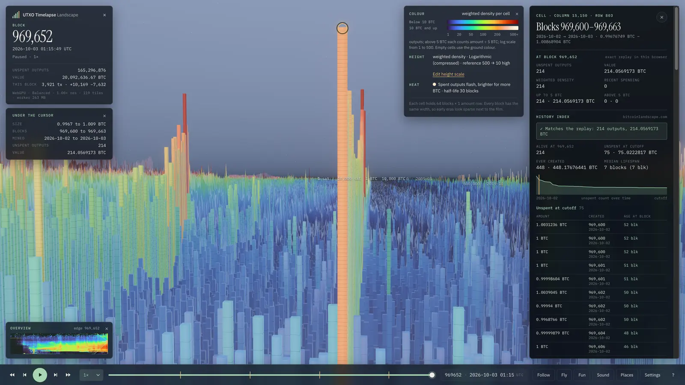
Looks
A look sets the light, palette and measure in one choice; the data stays the same. Eleven are built in, each one click away in the settings, and Save… stores your own.
-

Landscape
The default look: film palette colours in the blue hour just after sunset, the first stars out, light haze, shadows, bloom and cylinder columns near the camera.
Explore this view -

BitcoinTimelapse.com
The film at bitcointimelapse.com: its unlit colours through the film palette, stepped cells instead of cylinders, black background and ground, no lighting or post effects.
Explore this view -

Daylight
Midday: a high white sun in a pale blue sky, crisp shadows and the viridis palette, with no glow, so the relief reads like a map.
Explore this view -

Golden hour
Sunset from the tip side: a low orange sun, long shadows, thick warm haze, light shafts toward the sun and the inferno palette.
Explore this view -

Earth
A summer morning over an atlas: mist pales the distance, a sea runs to the horizon, and land goes from sand on the sparsest cells through brown earth to green.
Explore this view -

Whales
Sunrise over the BTC held in each cell instead of the number of outputs: the large-amount rows tower over the dust, and the magma palette runs to white on the biggest holdings.
Explore this view -

Pulse
A dim grey landscape where activity shows: spends flash amber and their glow lingers for hundreds of blocks. Press Play to watch the chain breathe.
Explore this view -

Outputs
Height and colour by the number of outputs in each cell, cividis, square boxes under a white sun, so dust rows and large holdings are compared by count alone.
Explore this view -

Money map
Height by the number of outputs, colour by the BTC they hold: grey below 1 BTC per cell, then violet, red and orange to pale yellow at 2,000 BTC.
Explore this view -

Linear
Height in proportion to weighted density, so proportions are true: nearly everything lies flat and the densest dust cells rise as walls.
Explore this view -

Paper
A white page for figures: light grey to black ink by density, soft shadows and red spend flashes.
Explore this view

Quality
- Performance
- 75% resolution, FXAA, no shadows or ambient occlusion, and cylinders only close to the camera.
- Balanced
- Native resolution, SMAA, two shadow cascades, SSAO and bloom, with cylinders where cells are 6 px wide or more.
- High
- Three shadow cascades, SSAO with 16 samples, fog, sky and stars, and 12-sided cylinders where cells are 4 px wide or more.
- Ultra
- High plus 4096 shadow cascades, volumetric light and god rays: 60 fps in the overview at 4K on an M4 Max.
- Extreme
- Deliberately GPU-bound, for GPUs beyond an M4 Max: supersampling, SSR, finer detail and up to 2M cylinders.
A first visit starts at Balanced with automatic resolution scaling. A browser without WebGPU, a touch-only device or one that reports 4 GB of memory or less starts at Performance and says so. Choosing a quality turns the automatic scaling off. Ultra, Extreme and the cylinder columns need WebGPU; ?webgl=1 forces the WebGL2 fallback, capped at High.

Sharing
The address keeps the block, camera, navigation mode, look, quality and the settings that differ from them, so a copied link reproduces the view; Copy link in the settings does the same. A link without a block opens at least 1,008 blocks, about a week, before the last block, so Play has something to play.
Under the hood
- Grid64 blocks per column and 2,072 amount rows, 15,189 × 2,072 cells for blocks 0 to 972,052.
- ReplayA Web Worker in your browser replays the change log from snapshots, so every block is exact.
- DataThe dataset sits on Cloudflare R2 behind a Cloudflare Worker, which also answers the inspector’s cell lookups.
Coda
Fly
T, or the Fun button, puts a craft in the air above the centre of the view, already flying: the plane, the bird or the jet. The mouse is a stick: sideways banks, up raises the nose, and the bank turns the craft.
A and D or the left and right arrows bank, the up and down arrows raise and lower the nose, W and S set the throttle, Shift boosts, and C changes craft, even in flight. Esc or T lands in map mode.
Stack sats
Enter starts a one-minute game. Fly through trails of coins and grab the bonus coins on the tallest columns. Each coin is worth the amount of the row it floats over: over the 50 BTC coinbase row it pays 50 BTC, over the 546 sat row 546 sat, so the whale rows at the back pay most.
Fun
- T
- Take off from the centre of the view; T again lands
- C
- Next craft: plane, bird, jet
- Enter
- Stack sats
- A D ← →
- Bank left or right
- ↑ ↓
- Nose up or down
- W S
- Faster or slower; Shift to boost
- Esc
- Back to map mode
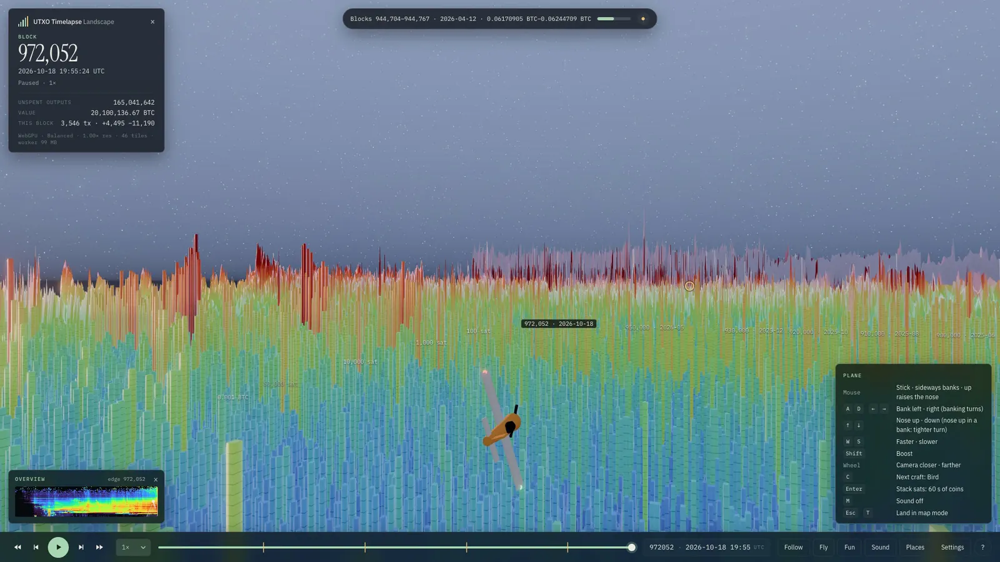
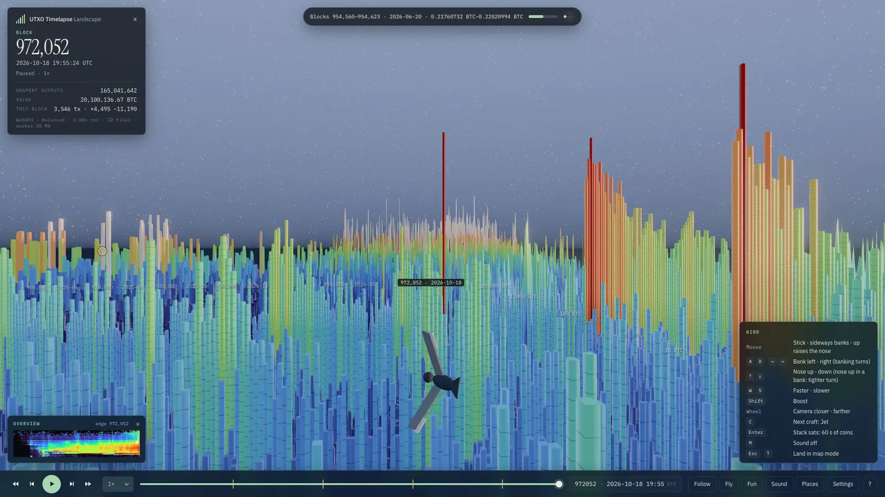
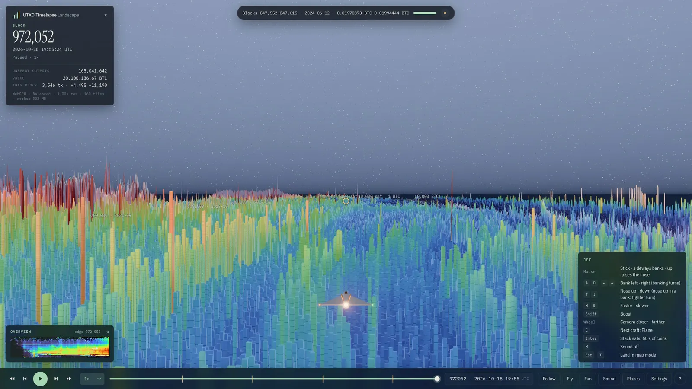
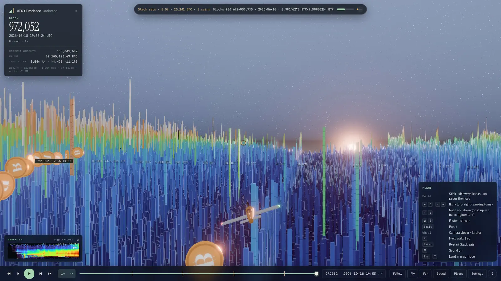
Index
Views
Each view opens in the app at its block and camera.
Movements
-
 Field
Explore Field
Field
Explore Field
- Strata Explore Strata
-
 A cell
Explore A cell
A cell
Explore A cell
- Return Explore Return
Places
-
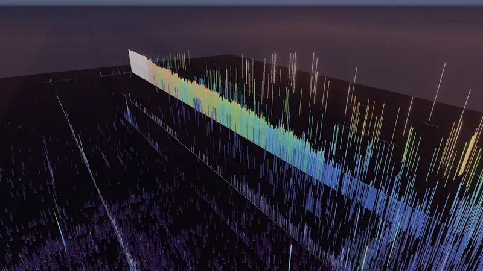
The first line Explore The first line -
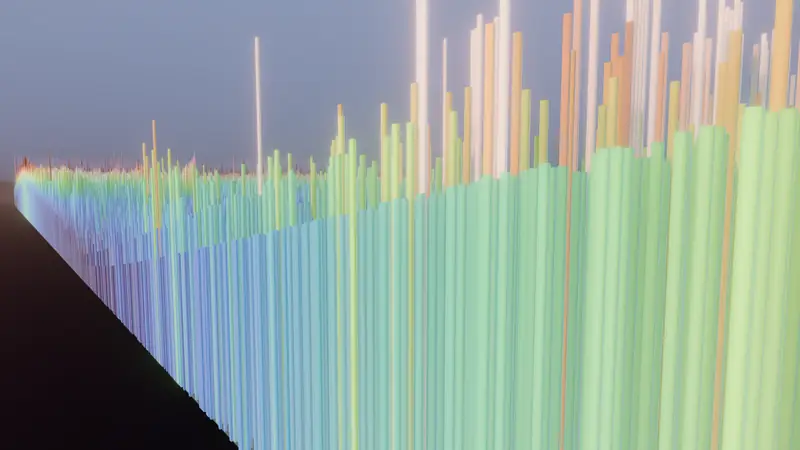
Towers at the edge Explore Towers at the edge -
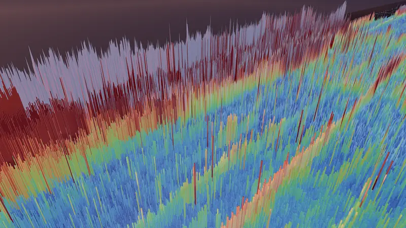
The ridge Explore The ridge -
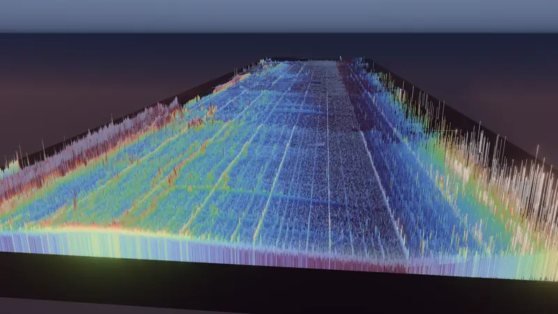
The field at the newest block Explore The field at the newest block
Time
-
 Time
Explore Time
Time
Explore Time
-
Seventeen years
Explore Seventeen years
-
 The ridge rises
Explore The ridge rises
The ridge rises
Explore The ridge rises
Light and reading
-
 Readings: outputs
Explore Readings: outputs
Readings: outputs
Explore Readings: outputs
-
 Readings: value
Explore Readings: value
Readings: value
Explore Readings: value
-
A day over the field
Explore A day over the field
-
 Earth
Explore Earth
Earth
Explore Earth
-
 Look: Landscape
Explore Look: Landscape
Look: Landscape
Explore Look: Landscape
-
 Look: BitcoinTimelapse.com
Explore Look: BitcoinTimelapse.com
Look: BitcoinTimelapse.com
Explore Look: BitcoinTimelapse.com
-
 Look: Daylight
Explore Look: Daylight
Look: Daylight
Explore Look: Daylight
-
 Look: Golden hour
Explore Look: Golden hour
Look: Golden hour
Explore Look: Golden hour
-
 Look: Earth
Explore Look: Earth
Look: Earth
Explore Look: Earth
-
 Look: Whales
Explore Look: Whales
Look: Whales
Explore Look: Whales
-
 Look: Pulse
Explore Look: Pulse
Look: Pulse
Explore Look: Pulse
-
 Look: Outputs
Explore Look: Outputs
Look: Outputs
Explore Look: Outputs
-
 Look: Money map
Explore Look: Money map
Look: Money map
Explore Look: Money map
-
 Look: Linear
Explore Look: Linear
Look: Linear
Explore Look: Linear
-
 Look: Paper
Explore Look: Paper
Look: Paper
Explore Look: Paper